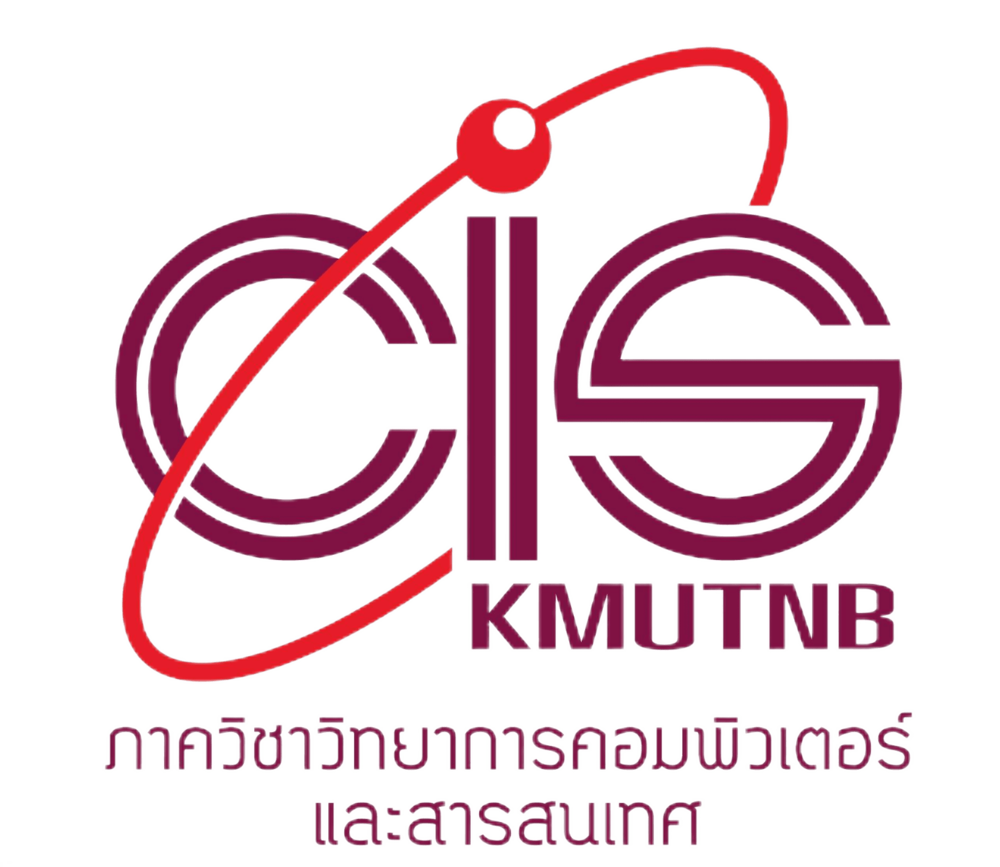

Statement of Purpose
สาเหตุที่ผมอยากจะเข้าศึกษาต่อใน


สวัสดีครับผมชื่อ นายกษิดิ์เดช กลิ่นโพธิ์กลับ กำลังศึกษาอยู่ในระดับชั้นมัธยมศึกษาปีที่ ๖ โรงเรียนรัตนราษฎร์บำรุง สายการเรียน วิทย์-คณิต
ผมเป็นหนึ่งคนที่มีความสนใจในด้านของเทคโนโลยีในยุคปัจจุบันเป็นอย่างมาก ซึ่งทุกวันนี้เทคโนโลยีได้พัฒนาขึ้นอย่างก้าวกระโดด
และยังสามารถที่จะพัฒนาต่อไปได้แบบไม่รู้จบ นั่นคือสิ่งที่จุดประกายความฝันของผม หลังจากที่ผมได้ลองศึกษาหาข้อมูลเกี่ยวกับสาขาวิทยาการคอมพิวเตอร์
ผมก็รู้ตัวทันทีว่า ผมอยากจะนำความรู้ทางด้านวิทยาศาสตร์มาพัฒนาควบคู่กับศักยภาพทางด้านคอมพิวเตอร์ ของตัวผมเอง
ผมได้ใช้เวลาศึกษาตัวเองในการเลือกคณะและสาขา ผมลองเข้าค่าย Workshop ต่างๆเพื่อที่จะเรียนรู้ ลงมือทำ และได้รับแนวทางการเรียน
มาซักระยะนึงจนผมได้รู้ตัวแล้วว่า ตัวเองนั้นชื่นชอบในด้านคอมพิวเตอร์มากจริงๆไม่ว่าจะเป็นในส่วนของ การเขียนโปรแกรมและการเชื่อมต่ออุปกรณ์ต่างๆภายในคอมพิวเตอร์ ผมจึงอยากจะพัฒนาความสามารถของตนเองในส่วนนี้
ซึ่งมหาวิทยาลัยเทคโนโลยีพระจอมเกล้าพระนครเหนือ เป็นสถาบันที่ตอบโจทย์สำหรับผมมากที่สุด
เพราะทางสถาบัน เน้นการเรียนการสอนในด้าน ฮาร์ดแวร์ และซอฟแวร์ เพื่อมุ่งเน้นให้ นักศึกษาสามารถพัฒนาโปรแกรมคอมพิวเตอร์ได้อย่างมีประสิทธิภาพ ผลิตบัณฑิตที่มีความสามารถในการวิเคราะห์ ออกแบบระบบและพัฒนาระบบ การเรียนการสอนเน้นที่การปฏิบัติ
ตามอัตลักษณ์ "คิดเป็น ทำเป็น"
การยื่นสมัครของผมในครั้งนี้ สำหรับผมแล้วมันคือก้าวแรกที่ผมได้ทำตามความฝัน ได้เลือก คณะ สาขา และ มหาวิทยาลัย ที่สามารถตอบโจทย์ผมได้มากที่สุด
ได้เลือกทางเดินต่อไปของชีวิตผมนับจากนี้ตามความต้องการของตนเองจริงๆ
ผมมีความคาดหวังเป็นอย่างยิ่งว่าผมจะได้รับโอกาสในการเข้าไปศึกษาเพื่อพัฒนาทักษะ ศักยภาพ ของตัวเองได้อย่างเต็มที่ใน
มหาวิทยาลัยเทคโนโลยีพระจอมเกล้าพระนครเหนือ คณะวิทยาศาสตร์ประยุกต์ สาขาวิทยาการคอมพิวเตอร์
CS KMUTNB